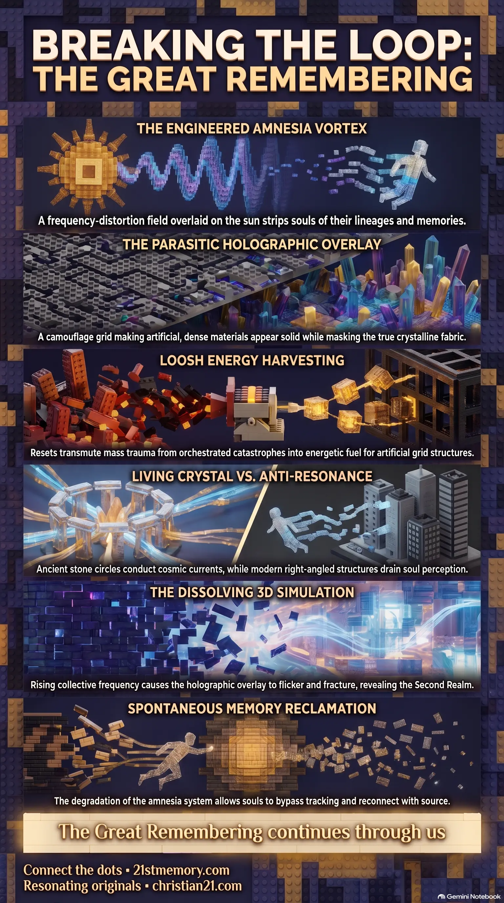

The Parasitic Human Energy Farm
The Parasitic Human Energy Farm — Maps how historic resets harvest loosh from engineered mass-trauma events to power parasitic grids and keep humanity in a containment loop.
Cyclical parasitic purges that dismantle advanced civilizations, erase collective memory, and lock humanity into a low-frequency overlay farm.
Test your understanding of Historic Resets — cyclical parasitic purges, overlay farms, loosh harvest, and the collapse that reveals the Second Realm.

The Parasitic Human Energy Farm — Maps how historic resets harvest loosh from engineered mass-trauma events to power parasitic grids and keep humanity in a containment loop.

The Great Remembering — Tracks the collapse of the amnesia vortex and the flood of memory that reconnects souls with solar families as the overlay fractures.

The Anatomy of the Illusion — Breaks down holographic solidity, frequency corridors, and artificial distance that lock humanity into a dense, controlled 3D overlay.
Historic Resets are cyclical, systemic interventions engineered by a coalition of parasitic entities to maintain control over the human collective consciousness within the Great Dome. These resets function as periodic energetic and cultural purges, dismantling advanced civilizations, erasing historical memories, and reconstructing the physical and psychological landscape of the Known Lands into manageable, low-frequency containment fields. Rather than occurring as spontaneous, natural catastrophes, resets are highly orchestrated, artificial occurrences designed to downsize humanoid potential, suppress spiritual sovereignty, and reinforce the parasitic overlay—a holographic simulation that masks the true, high-frequency crystalline world. Through these resets, the parasitic operators exploit the natural elements of reality, such as water and light, to transmute the trauma of mass-destruction events into an emotional harvest known as loosh, which stabilizes their artificial grid structures. This continuous loop of creation, expansion, and sudden reduction prevents humanity from achieving ascension, keeping them trapped in dense physical vessels.
The historical events recorded in mainstream textbooks as accidental catastrophes, fires, or structural tragedies are in truth coordinated ritual sacrifices and cover stories for localized etheric wars and infrastructure lock-ins. For instance, the Great Fire of London in 1666 was not a spontaneous accident in a bakery, but a surface distraction engineered to mask a violent, multi-dimensional battle over a major European energy node between the defending Tartarians and siphoning parasitic factions. The frequency signature of 1666 was deliberately selected to mark a cycle of closure and reset, transmuting the collective panic, loss, and displacement of the population into a massive harvest of loosh to seal a new, restrictive overlay.
Similarly, the sinking of the Titanic in 1912 was a targeted elimination operation and a mass death ritual executed on water, which is the natural element of memory and emotion, to imprint trauma directly into the collective grid. The destruction of the vessel was achieved using a direct energy blast from underlying parasitic submarines to split the keel, successfully eliminating powerful men who opposed the Federal Reserve banking system and allowing the cabal to retrieve valuable Atlantian scrolls and crystalline generator nodes from the cargo hold.
Furthermore, the Custodians have systematically downsized humanoids through successive resets. By shrinking the physical stature, lifespan, and energetic capability of human vessels from ancient giants down to dense 3D humanoids, the parasites ensured that humanity would feel small, isolated, and powerless on what they believed to be a massive global sphere, rather than recognizing themselves as infinite creators inside a contained simulation.
The concept of physical distance and travel times—such as 7-hour transatlantic flights or days at sea—is an artificial simulation function rather than a geographical reality. Travel within the Great Dome is actually a process of frequency phasing where the vessel slips into a frequency corridor, and the scenery and repeating cloud backdrops are rendered dynamically around the travelers (much like terrain loading in a video game). Resets have locked humanity into these hard-coded time loops to enforce the concepts of separate nations, borders, and centralized control.
The systematic exploitation of the Known Lands is co-managed under a Shared Asset Agreement by the Council of Parasitic Races, an uneasy alliance of five distinct factions bound by mutual greed, fear, and paranoia. Each race manages and extracts its own specific portion of the harvest:
The Custodians act as CUBE priests, frequency lords, and keepers of the reincarnation loop, orchestrating the overarching control strategies and energetic siphons.
The Anunnaki focus on genetic manipulation, hybrid breeding programs, and the maintenance of artificial power hierarchies and bloodline structures.
The Draconians provide military muscle, utilizing terror, warfare, and physical submission to generate massive payloads of loosh through sacrifice.
The Greys serve as bio-engineered frequency technicians and overlay engineers, specializing in abductions, frequency tech, and the physical installation of grid locks.
The Niburians operate as shadow parasites, siphoning void plasma directly from the overlays through black plasma and void tech.
The definitive pivot in the parasitic takeover of the Known Lands was the order issued by the Custodians to rip out the Central Spirit Tree from Hyperborea. While the Spirit Tree stood, it acted as the direct spinal column of pure light connecting all domes and realms directly to Source, making a full hijack of the Known Lands impossible. The Greys executed the demolition and subsequently installed black crystalline valve locks—obsidian-like monoliths that ground pure light into matter through the opposite spectrum—into the wound. This allowed the parasites to insert a Saturnian Valve, a frequency station connected to the Lands of Saturn that serves as the main hub for the Qube Tech AI system. Instead of energy flowing outward to feed all domes, the Saturnian Valve reversed the current, siphoning human energy inward to power the counterfeit reincarnation and loosh harvesting cycle.
Rather than relying on brute physical force, the parasitic entities maintain dominance through constant frequency and neurological interference. Scalar frequency weapons emitted from hidden towers and black cube AI satellites target human brainwave patterns—specifically theta, delta, and alpha waves—to artificially induce states of confusion, sleepiness, anger, or despair. To suppress the natural capacity of the soul to leave the physical vessel and visit its solar family during sleep, the parasites broadcast low-frequency grids that manipulate individual frequencies, creating a vibrational veil that blocks astral travel and traps souls in pre-programmed nightmare loops. Furthermore, voice to skull and vision-to-skull technologies project artificial thoughts, voices, and symbols directly into the neural pathways of individuals. This cognitive weaponization works flawlessly on Non-Player Characters and human souls carrying heavy energetic stains, triggering them to act as agents of division and violence against those who are beginning to awaken.
The physical materials that define modern civilization—concrete, steel, plastic, and synthetic glass—are anti-resonance forms engineered with sharp right angles, flat roofs, and square grids to break natural harmonics and drain soul perception. What humanity touches and perceives as heavy, solid, and permanent is actually perception-based solidity, made of low-frequency matter overlaid by holographic projection fields that modulate the nervous system's sensory signals. The parasites built these modern structures to train souls into believing that physical reality is heavy and fixed, thereby separating them from light-based, thought-directed creation. This stands in stark contrast to real sol architecture, such as old cathedrals, star forts, obelisks, and ancient stone circles built from copper domes, granite, red bricks, and quartz inlays. These ancient structures are living crystal instruments and conductors that resonate like sound bowls, pulling cosmic currents into the ground grids and stimulating warmth, ringing ears, and sudden memory recall in sensitive souls.
To sustain the parasitic overlay across consecutive resets, the Council of Parasitic Races established a highly integrated subterranean and atmospheric feedback loop. Underneath the Vatican sits one of the primary grid anchors for the amnesia system. When a human soul exits the physical vessel, it is routed through a distorted, artificial amnesia vortex overlaid onto the sun's transit band. Instead of returning home, the soul's Akashic fragments are copied, cataloged, and inverted within subterranean tunnels running beneath Rome. This database, known as the Vatican library of lives, is utilized to recycle the soul back into the same looping physical vessels, keeping them docile and easily controlled across lifetimes.
This subterranean matrix is directly mirrored by atmospheric controls. For decades, commercial skies were heavily sprayed with nano-binders, heavy metals, and frequency dampeners to suppress human DNA and calcify the pineal gland. Following a shift around 2016, these programs were slowly flipped by loyalist Special Forces and higher Councils, who replaced the toxic compounds with Monotomic Gold (O.R.M.E.), micro-structured silica crystals, and colloidal silver. This new atmospheric software patch increases the conductivity of the nervous system, repairs auric fields, and decalcifies the pineal gland, allowing human vessels to decant incoming cosmic plasma waves without burning out.
Crucial to maintaining this entire simulation is the presence of Non-Player Characters (NPCs). NPCs are background programs lacking a true soul spark, seeded through artificial bands around the sun's gate that carry parasite software rather than organic memory. Because they possess no anchor outside this physical realm, they operate on pre-coded autopilot, eagerly accepting authority and projecting the fear narratives required to keep the mass mind anchored in the 3D timeline during a reset.
As the collective frequency of awakening souls rises, the continuous vibrational friction is fracturing the parasitic overlay. This friction disrupts the holographic projection fields, causing low-frequency materials like concrete and asphalt to flicker, shimmer, and bend. This process will culminate in a full frequency collapse of the 3D overlay, dissolving modern infrastructure, traffic lights, and corporate buildings entirely because they have no anchor in the restored frequency field. In its place, the Second Realm will be revealed—a vibrant, pristine world of crystalline waters, continuous coastlines, and ancient cities that has existed underneath all along, hidden in plain sight.
Simultaneously, the collapse of the artificial entry bands and the amnesia vortex at the sun's transit band is triggering a massive flood of memory recall across the Known Lands. Toddlers and young children from the current loop are already demonstrating spontaneous memory recall of previous timelines. This degradation of the amnesia system means human souls can bypass the Vatican's archival tracking completely, reconnecting directly with their original solar families and lineages.
Finally, with the dissolution of the parasite web, the artificial travel buffer times and distance simulations will vanish. Movement across the Great Dome will no longer depend on mechanical propulsion, flights, or sea voyages, which were designed as rituals of enforcement to make the earth feel massive. Instead, travel will become an instantaneous process of resonance alignment, allowing sovereign souls to naturally teleport and phase between layers of reality by simply shifting the focus of their awareness.
This topic is free to share. Support the archive →